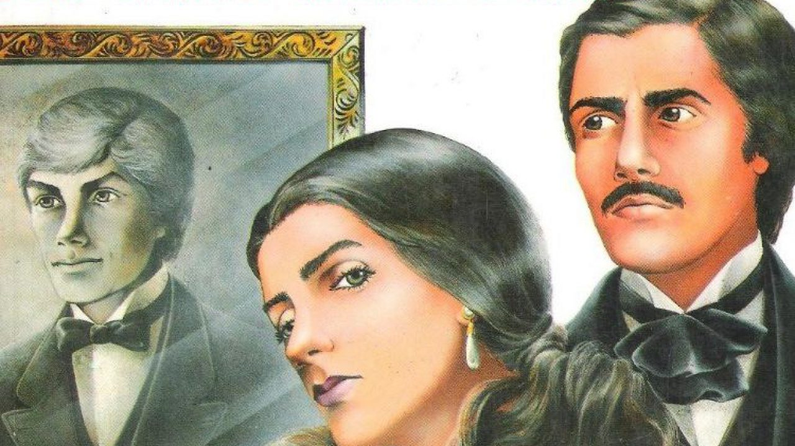

Dom Casmurro (1899), Machado de Assis
Considerado pela crítica especializada como o terceiro romance da Trilogia Realista de Machado de Assis. Dom Casmurro é um relato em primeira pessoa de Bento Santiago sobre a sua própria vida. O leitor acompanha a sua infância, a vida no seminário, o romance com Capitu e as desconfianças e ciúmes que sente da mulher que ama desde criança.
Macunaíma (1928), Mário de Andrade
A busca de Mário de Andrade pela “verdadeira identidade nacional” resultou na sua obra-prima Macunaíma. O livro tornou-se um dos grandes marcos do movimento modernista no país. Nele, Mário de Andrade exalta as características malandras do protagonista, que nascido na selva chega à cidade cheio de heranças indígenas.
O Sítio do Pica-pau Amarelo (1920-1947), Monteiro Lobato
O principal clássico da literatura infantil brasileira. O Sítio do Pica-pau Amarelo é uma série de 23 livros sobre as aventuras dos netos da Dona Benta,Pedrinho e Narizinho. Passam por mil e uma aventuras na companhia de seus inseparáveis bonecos Emília, a boneca de pano falante e Visconde de Sabugosa, um sábio boneco de sabugo de milho. Aventuras que pontualmente acabam a tempo de comer os quitutes preparados pela Tia Nastácia.

Gabriela, Cravo e Canela (1958), Jorge Amado
Este livro marca uma grande mudança dos assuntos abordados por Jorge Amado. Passa a descrever crônicas de costumes, após ter abordado diversos temas sociais. Em uma rica Ilhéus dos anos 20, Gabriela vive as mudanças de uma sociedade patriarcal em uma nova e dinâmica sociedade tocada por recentes ideias culturais, políticas e econômicas.
Iracema (1865), José de Alencar
O segundo livro da trilogia indianista de José de Alencar é um romance clássico que retrata a história de amor entre a índia Iracema e o colonizador Martim. O livro simboliza a criação da terra do autor, o Ceará. Moacir, o filho do casal, seria o primeiro cearense e um fruto da miscigenação vivida no país desde aquele período. O livro representa ainda a dominação sofrida pela América diante da colonização europeia.